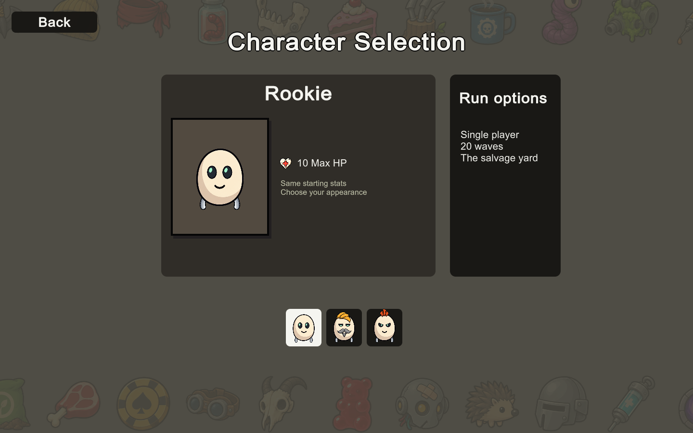
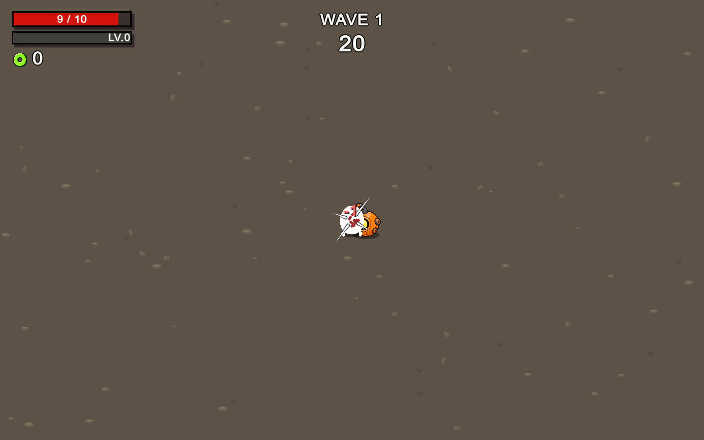
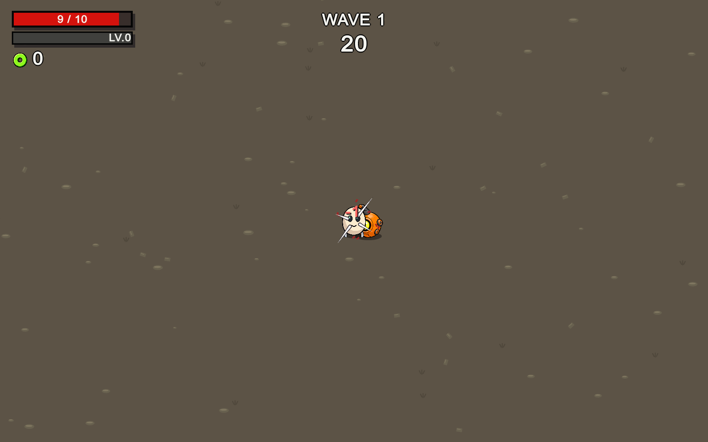

The same silver limb art now hangs down and curves outward. World movement and menu previews share the stance; turning left preserves the outward curve.

A brief white flash, separate impact streaks, red fragments and a red damage number. The character remains visible during the short protection period. The red screen border is gone.


The previous zombie attack grunt was the wrong mapping. These are the four impact samples used by the supplied Brotato player's scene. Preview at their source pitch; in-game pitch varies slightly.